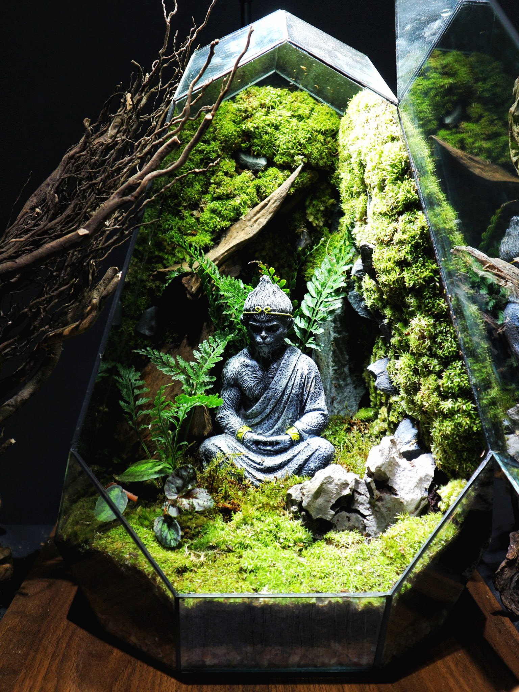
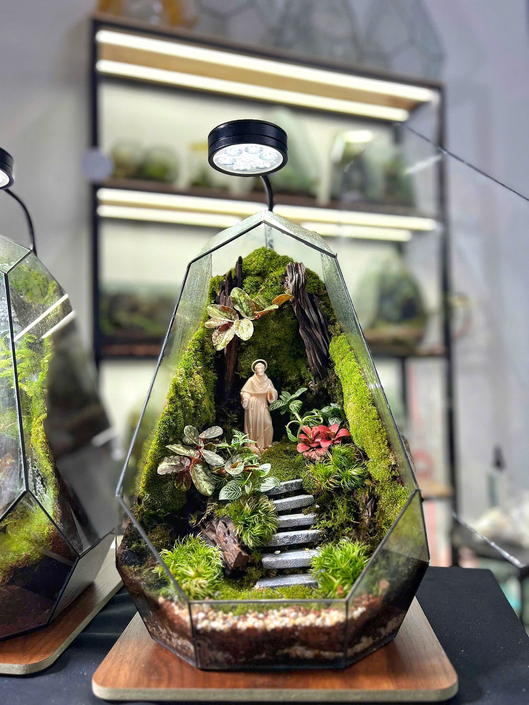

Những mẫu nhỏ gọn như Trứng, Bình trụ, Mini Cube cho đến các mẫu Đa giác cao cấp, sản phẩm tại Thuận Phát Garden đều được thiết kế tinh tế, hiện đại và độc đáo.
Mỗi sản phẩm đều là một mô hình thu nhỏ giàu tính nghệ thuật, có thể đặt tại bàn làm việc, quầy lễ tân, kệ sách, hoặc làm quà tặng cao cấp. Đặc biệt, dòng Đa giác với các khối hình 3D phối tượng thiền, mang lại cảm giác an yên, cân bằng giữa bộn bề cuộc sống.